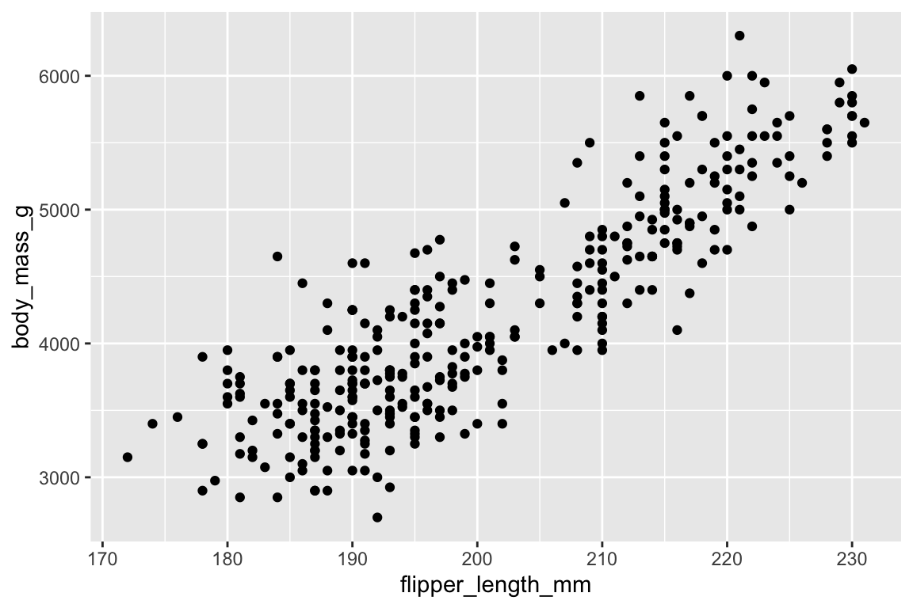
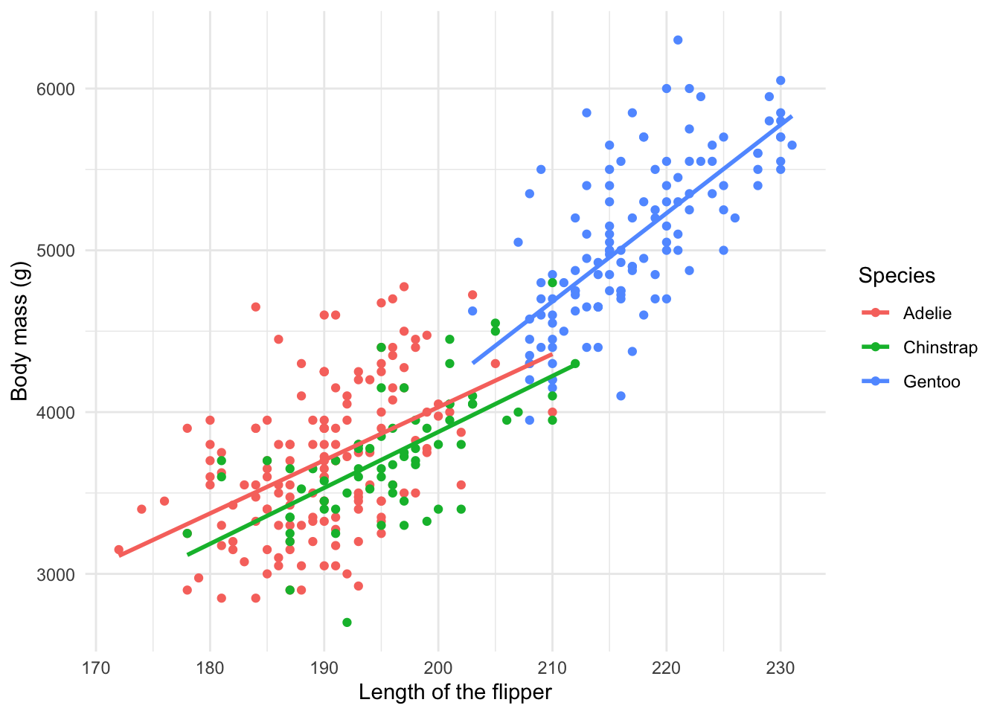

Visualization
Telling stories with plots in R
Welcome back!
This weeks session will introduce you to some basic visualization approaches in R.
- We will revisit some fundamental principles of visualization.
- We will learn some basics of data visualization with
ggplot.
Basics of Visualization
Introduction to ggplot2
ggplot2 is by far the most popular visualization package in R. ggplot2 implements the grammar of graphics to render a versatile syntax of creating visuals. The underlying logic of the package relies on deconstructing the structure of graphs (if you are interested in this you can read this article).
For the purposes of this introduction to visualization with ggplot, we care about the layered nature of visualizing with ggplot2.

# Load packages. Install them first, in case you don't have them yet.
library(palmerpenguins) # To get our example's dataset
library(tidyverse) # To use dplyr functions and the pipe operator when needed
library(ggplot2) # To visualize data (this package is also loaded by library(tidyverse))Our building blocks
During this week, we will learn about the following building blocks:
- Data: the data frame, or data frames, we will use to plot
- Aesthetics: the variables we will be working with
- Geometric objects: the type of visualization
- Theme adjustments: size, text, colors etc
Data
The first building block for our plots are the data we intend to map. In ggplot2, we always have to specify the object where our data lives. In other words, you will always have to specify a data frame, as such:
ggplot(name_of_your_df)In the future, we will see how to combine multiple data sources to build a single plot. For now, we will work under the assumption that all your data live in the same object.
Aesthetics
The second building block for our plots are the aesthetics. We need to specify the variables in the data frame we will be using and what role they play.
To do this we will use the function aes() within the ggplot() function after the data frame (remember to add a comma after the data frame).
ggplot(name_of_your_df, aes(x = your_x_axis_variable, y = your_y_axis_variable))Beyond your axis, you can add more aesthetics representing further dimensions of the data in the two dimensional graphic plane, such as: size, color, fill, to name but a few.
Geometric objects
The third layer to render our graph is a geomethic object. To add one, we need to add a plus (+) at the end of the initial line and state the type of geometric object we want to add, for example, geom_point() for a scatter plot, or geom_bar() for barplots.
ggplot(name_of_your_df, aes(x = your_x_axis_variable, y = your_y_axis_variable)) +
geom_point()Theme
At this point our plot may just need some final thouches. We may want to fix the axes names or get rid of the default gray background. To do so, we need to add an additional layer preceded by a plus sign (+).
If we want to change the names in our axes, we can utilize the labs() function.
We can also employ some of the pre-loaded themes, for example, theme_minimal().
ggplot(name_of_your_df, aes(x = your_x_axis_variable, y = your_y_axis_variable)) +
geom_point() +
theme_minimal() +
labs(x = "Name you want displayed",
y = "Name you want displayed")Our first plot
For our very first plot using ggplot2, we will use the penguins data from last week.
We would like to create a scatterplot that illustrates the relationship between the length of a penguin’s flipper and their weight.
To do so, we need three of our building blocks: a) data, b) aesthetics, and c) a geometric object (geom_point()).
ggplot(penguins, aes(x = flipper_length_mm, y=body_mass_g)) +
geom_point()## Warning: Removed 2 rows containing missing values (geom_point).
Exercise: Once we have our scatterplot. Can you think of a way to adapt the code to:
- convey another dimension through color, the species of penguin
- change the axes names
- render the graph with
theme_minimal().
- render the graph with
Visualizing effectively
Plotting distributions
If we are interested in plotting distributions of our data, we can leverage geometric objects, such as:
geom_histogram(): visualizes the distribution of a single continuous variable by dividing the x axis into bins and counting the number of observations in each bin (the default is 30 bins).geom_density(): computes and draws kernel density estimate, which is a smoothed version of the histogram.geom_bar(): renders barplots and in plotting distributions behaves in a very similar way fromgeom_histogram()(can also be used with two dimensions)
This is a histogram presenting the weight distribution of penguins in our sample. .
ggplot(penguins, aes(x = body_mass_g)) +
geom_histogram()## `stat_bin()` using `bins = 30`. Pick better value with `binwidth`.
Exercise: Let’s adapt the code of our histogram:
- add
bins = 15argument type different numbers)
- add
- add
fill = "#FF6666"(type “red”, “blue”, instead of #FF6666)
- add
- change the geom to
_densityand_bar
- change the geom to
Plotting relationships
We can utilize graphs to explore how different variables are related. In fact, we did so before in our scatterplot. We can also use box plots and lines to show some of these relationships.
For example, this boxplot showcasing the distribution of weight by species:
ggplot(penguins, aes(x = species, y = body_mass_g)) +
geom_boxplot() +
theme_minimal() +
labs(x = "Species",
y = "Body mass (g)")## Warning: Removed 2 rows containing non-finite values (stat_boxplot).
Or this adaptation of our initial plot with a line of best fit for the observed data by each species:
ggplot(penguins, aes(x= flipper_length_mm, y = body_mass_g, color = species)) +
geom_point() +
geom_smooth(method = "lm", se = F) +
theme_minimal() +
labs(x = "Length of the flipper",
y = "Body mass (g)",
color = "Species")## `geom_smooth()` using formula 'y ~ x'
Next steps
Now that you have been introduced to some of the basics of ggplot2, the best way to move forward is to experiment. As we have discussed before, the R community is very open. Perhaps, you can gather some inspiration from the Tidy Tuesday social data project in R where users explore a new dataset each week and share their visualizations and code on Twitter under #TidyTuesday. You can explore some of the previous visualizations here and try to replicate their code.
Here is a curated list of awesome ggplot2 resources.
Sources
This tutorial is based largely on chapters 7 to 10 from the QPOLR book*
A work by Lisa Oswald & Tom Arend
Prepared for Intro to Data Science, taught by Simon Munzert